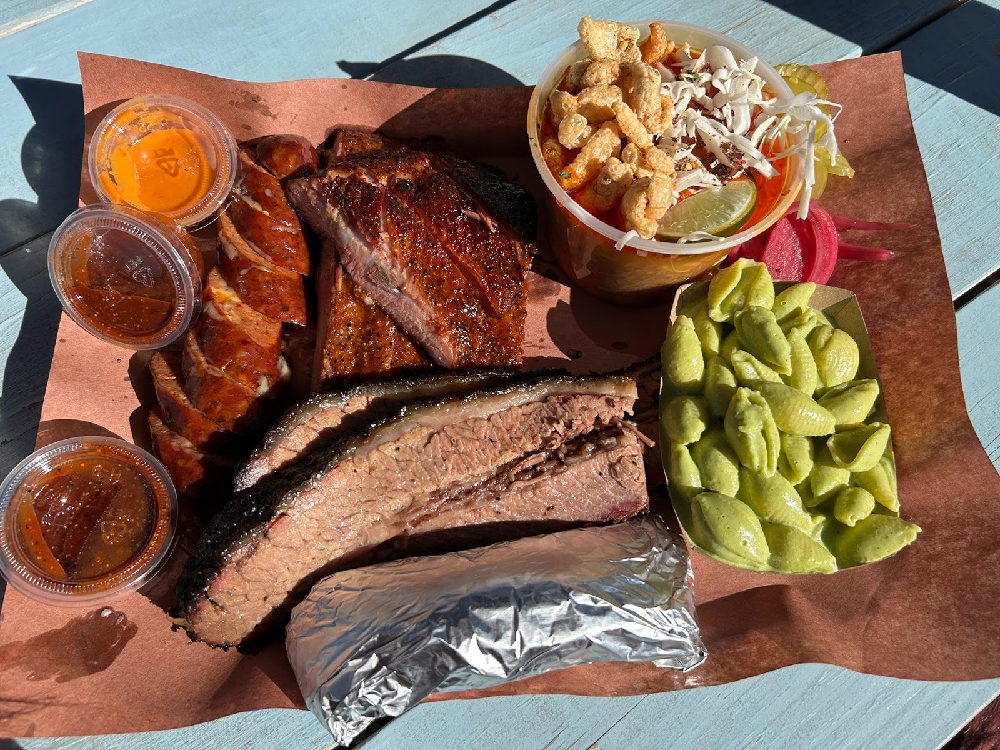

The photos
From the pit
Trays, the patio and the pit, photographed by guests.





Hungry yet?
Open Thursday through Sunday, 11 AM to 3 PM. Closed Monday to Wednesday.
The photos
Trays, the patio and the pit, photographed by guests.

Open Thursday through Sunday, 11 AM to 3 PM. Closed Monday to Wednesday.